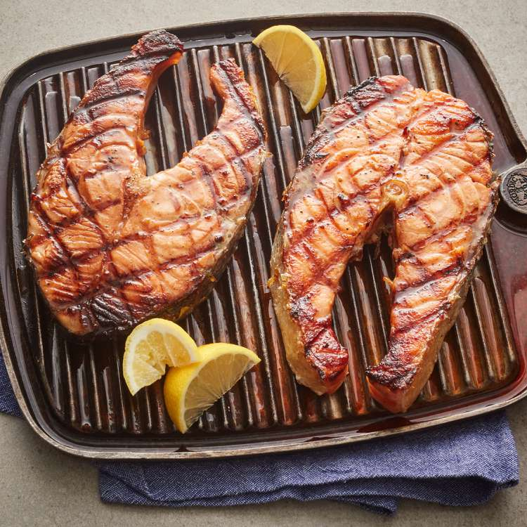

Charboiled Salmon

Description
Here's a very simple salmon recipe that starts with a marinade of soy sauce, red wine, ginger, and black pepper. Grill over hot coals for about 5 minutes per side, basting frequently with extra marinade. "This seafood treat is best prepared over a charcoal fire, but in bad weather the oven broiler will do," says Alan Harasimowicz. "The secret is in the marinade."
Ingredients
- 1 cup soy sauce
- 2 tablespoons red wine
- ½ teaspoon ground ginger
- ½ teaspoon ground black pepper
- 2 pounds salmon steaks
- 4 sprigs fresh parsley, for garnish
- 4 slices lemon, for garnish
Steps
- Combine soy sauce, red wine, ginger, and black pepper in a large, resealable plastic bag. Seal, and shake vigorously to mix ingredients. Add salmon steaks, squeeze out excess air, and seal. Refrigerate, turning frequently to keep all sides in contact with the liquid, for no less than 2 hours.
- Preheat an outdoor grill for medium high heat.
- Cook on a hot grill for about 5 minutes per side, basting freely with extra marinade. Serve with parsley garnish and lemon slices.
Back Home